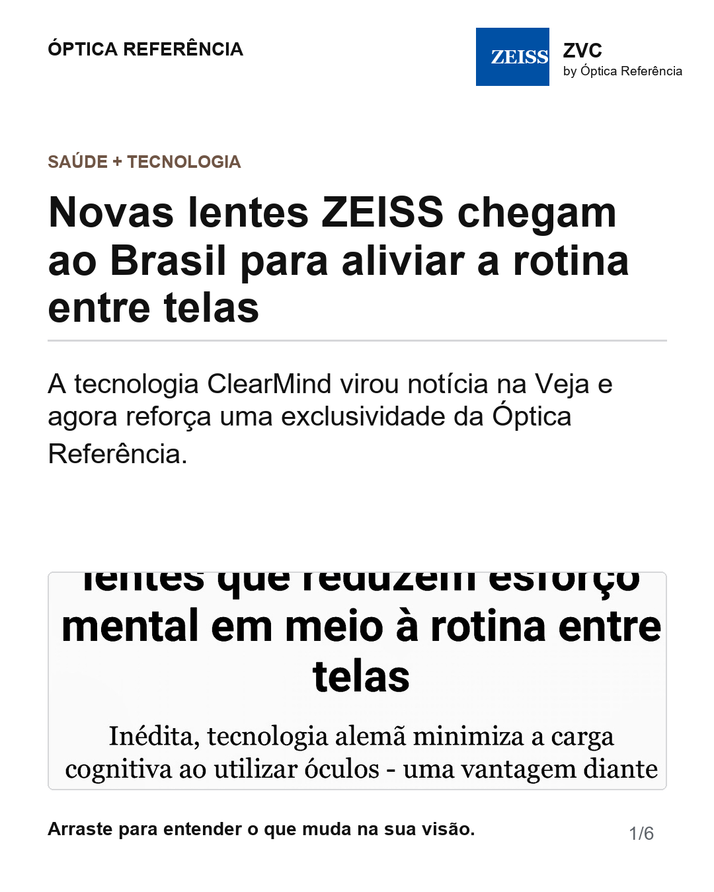
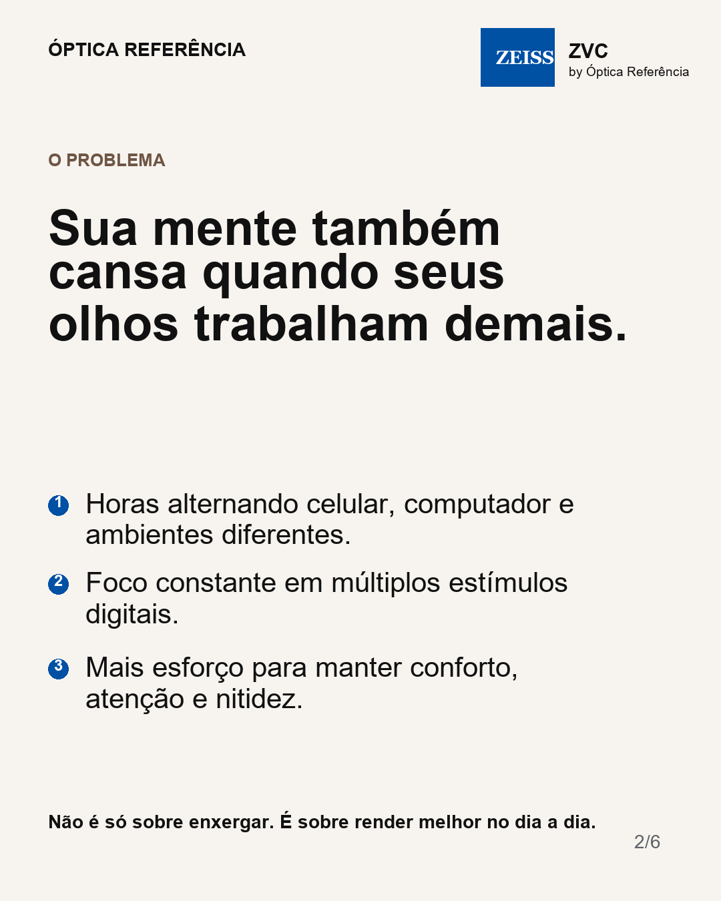
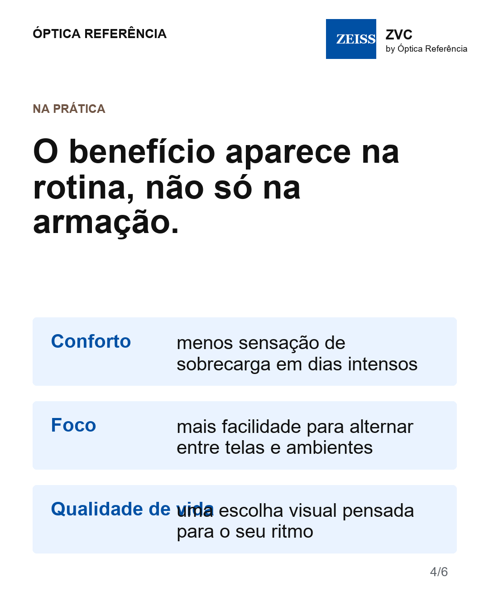
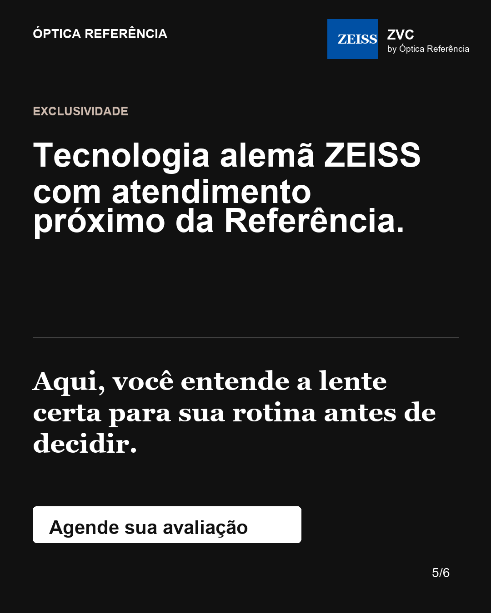
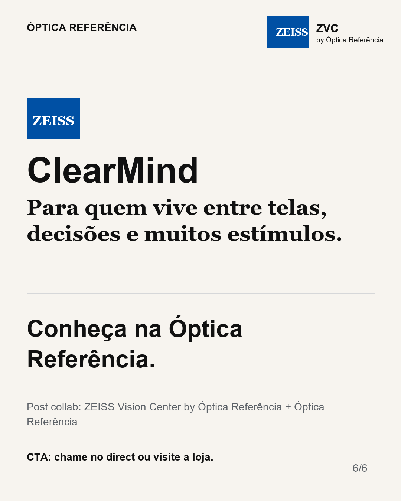

<!doctype html>
<html lang="pt-BR">
<meta charset="utf-8">
<title>Preview Carrossel ClearMind</title>
<style>
  body { margin: 0; background: #ececec; font-family: Arial, sans-serif; }
  main { display: grid; grid-template-columns: repeat(auto-fit, minmax(320px, 1fr)); gap: 24px; padding: 24px; }
  figure { margin: 0; background: white; padding: 12px; border-radius: 8px; }
  img, video { width: 100%; border-radius: 4px; display: block; }
  figcaption { font-size: 14px; color: #555; margin-top: 8px; }
</style>
<main>
  <figure><figcaption>01_capa_noticia.png</figcaption></figure><figure><figcaption>02_problema_telas.png</figcaption></figure>
  <figure>
    <video src="C:/Users/vini1/Downloads/POST LENTE/VERTICAL_ZEISS_ClearMind_9x16_OP1_15s.mp4" controls muted loop playsinline></video>
    <figcaption>Slide 3 em vídeo: usar VERTICAL_ZEISS_ClearMind_9x16_OP1_15s.mp4</figcaption>
  </figure>
  <figure><figcaption>04_beneficios_rotina.png</figcaption></figure><figure><figcaption>05_exclusividade_referencia.png</figcaption></figure><figure><figcaption>06_cta_final.png</figcaption></figure>
</main>
</html>
